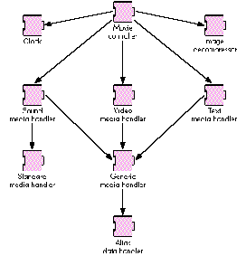
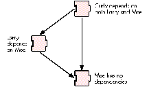

One of the many design problems a component developer may face is how to register
interdependent components in a predetermined fashion so that any given component is
registered before the components that depend on it. This article and the sample code
that accompanies it show you how to do just that.
The Component Manager is an effective mechanism for providing extended functionality
to the Macintosh platform. Although a single component can perform impressive tasks,
often it's a hierarchy of components, cooperating with one another, that provides the
most powerful capabilities. An example of such a hierarchy is found in QuickTime
movie playback using the movie controller component (see Figure 1). This component
uses the services of many other components, all of which cooperate together, to make
interaction with QuickTime movies very simple yet very powerful.
There are distinct advantages to partitioning functionality in this manner. First, by
creating components that perform simpler processing, you increase the likelihood that
you can leverage the investment you've made in your code by using it in more than one
place. Second, it's easier to debug smaller components than a gigantic
everything-and-the-kitchen-sink component. Finally, a component that provides
very elementary functionality is easier to override or update (via component
replacement or capture) than a large, complex component.
This situation -- a component depending on the presence of several lower-level
components to perform its function -- is very commonplace. In such cases, it's
important to take steps to ensure that supporting components are available when your
component needs them. There are two obvious choices for when to go looking for the
components you depend on: when your component is being registered (in its register
routine), or when your component is first opened (in its open routine). Most
software-dependent components don't need to worry much about managing component
registration. Generally such a component should just auto-register, and then check
for any required components in the open routine; if the required components aren't
available, your open routine can return an error. The caller of your component can
then handle the error in whatever way is most appropriate. There is a case, however,
where checking at registration time might be necessary; that's what this article is
about.

Figure 1 The Movie Controller Component Hierarchy
One potential problem occurs in situations where the Component Manager's
registration list is used to build some user interface element, such as a pop-up menu
or a list. In this case, the general assumption is that because a component's name is
displayed in a user interface element, a user can select it and it will do whatever it's
supposed to do -- after all, if the component couldn't perform its function, it wouldn't
be displayed as an option for the user, right? Well, that depends.
Let's look at an example. The SuperOps company builds the WhizBang video digitizer
card and supplies two software components with it -- the WhizBang video digitizer
component and the WhizBang sequence-grabber panel component (which is used to
control features specific to the WhizBang hardware). The component files are named
WhizBang Video Digitizer and WhizBang Panel. In its register routine, the WhizBang
video digitizer component checks for its hardware and registers with the Component
Manager only if the hardware is present (this is normal behavior for components that
encapsulate hardware functionality). The WhizBang sequence-grabber panel
component checks for the availability of the WhizBang video digitizer component when
it receives either an open message or a "panel can run" message -- it doesn't get a
register message, and therefore it always registers successfully with the Component
Manager.
Now let's say I've got a Macintosh Quadra 950 with multiple sound and video digitizers
installed (I can dream, can't I?), one of which is the WhizBang card. I remove the
WhizBang card from my computer, but I leave the two WhizBang components installed.
I then start up my Macintosh Quadra and run my favorite movie capture application. I
display the sequence-grabber video settings dialog box, and I see a dimmed item in the
panel pop-up menu -- "WhizBang panel." The dimmed name indicates one of two
things: another application has the WhizBang video digitizer open, so it's not available,
or the WhizBang video digitizer component isn't registered at all, so the panel can't
run.
In this case, we already know that the WhizBang card isn't installed, so there's no way
this panel canever be enabled, given the current hardware configuration. Rather than
confuse users by displaying the panel name in the pop-up menu (even if it is
dimmed), it would be nicer if it weren't displayed atall. To do that, we need to ensure
the following order of events at startup: the video digitizer component must attempt to
register first, and then the panel component must attempt to register (this implies
that the panel component must implement a register routine), checking for the
presence of the video digitizer component before it does so. Further, this sequence of
events must not be influenced by the alphabetic order of the component filenames.
Guess what? We can realize this goal by managing component registration.
This article and the sample code on this issue's CD demonstrate various ways of
managing component registration. We start with the easiest, most obvious approach
and work our way up to a more sophisticated solution, pointing out the pros and cons of
each along the way. If you just want the "answer" without any fanfare, skip ahead to
the section "Mo' Better: Use a Loader Component to Manage Registration."
I assume that you're familiar with the Component Manager and that you know
something about how components are written. For more information on these topics,
seeInside Macintosh: More Macintosh Toolbox and "Techniques for Writing and
Debugging Components" indevelop Issue 12.
The Component Manager behaves slightly differently depending on the version of
system software it's running under and how the Component Manager was installed. It's
important to know about these subtleties in order to understand how to work with the
Component Manager to install your components properly.
In system software version 6.0.7, the Component Manager is installed as part of an
INIT (usually the QuickTime INIT). During the INIT installation, the Component
Manager examines the contents of the System Folder and its subfolders for files of type
'thng'; in each 'thng' file, it looks for resources of type 'thng', which it then uses to
register the corresponding components. The important point here is that the
Component Manager is not available until after the INIT has been installed.
Like system software version 6.0.7, versions 7.0 and 7.0.1 pick up the Component
Manager via an INIT, and so again the Component Manager isn't around until after the
INIT has been installed. The main difference in System 7 is that in addition to
searching the System Folder and its subfolders for component files, the Component
Manager will also examine the contents of any subfolders that are in the Extensions
folder.
Examples of INITs in system software versions 7.0 and 7.0.1 that install the
Component Manager are QuickTime, AppleScript, and Macintosh Easy Open. Note that
your component can't assume that just because the Component Manager is installed,
QuickTime is installed -- always use the Gestalt selectors to determine what
functionality is available.
The Component Manager is actually part of System 7.1 and, as a consequence, is
available before the INIT process is started.
Now that we have a good idea of when the Component Manager is installed and where it's
searching for components, let's see what we can do to make sure that our components
get registered in the order we want them to be registered.
We'll use some simple components to illustrate the various methods we might use to
manage component registration. In the sample code provided on the CD are three
components -- Moe, Larry, and Curly -- that together establish a functional
component hierarchy (see Figure 2). The hierarchy is such that Moe doesn't depend on
any other components, Larry depends on Moe, and Curly depends on both Larry and
Moe. To enforce these dependencies, we use register routines in Larry and Curly to
make sure that the components they need are present before they actually allow
themselves to be registered with the Component Manager. To let us know when each of
these components is actually registered, Moe's register routine calls SysBeep once,
Larry's calls SysBeep twice, and Curly's calls SysBeep three times. By the way, these
components really don't do anything useful at all, but you probably figured that out
already.

Figure 2 The Moe, Larry, and Curly Component Hierarchy
RISKY: LET THE COMPONENT MANAGER TAKE CARE OF IT
We can always simply let the Component Manager do whatever comes naturally -- in
this case, auto- registration. This method works only as long as you aren't picky about
the order in which your components are registered. (Obviously, if your component
doesn't depend in any way on the presence of other components, you're golden.) In our
example scenario, though, we can't count on the Component Manager recognizing our
constraints and doing the right thing. The Component Manager doesn't have enough
information to know that our components have an ordering dependency (kinda reminds
you of INITs, doesn't it?).
Nonetheless, let's look at what happens. The following is what occurs on my Macintosh
Quadra 700 running System 7.1 and QuickTime 1.6, but you shouldn't infer that this
is how the Component Manager will behave from now until eternity -- there is no
documentation whatsoever that provides this kind of detailed information on component
registration behavior, so itcan change.
We start with each component in a separate file. We might expect that the Component
Manager would register component files in alphabetic order, and in fact this is exactly
what happens. The first component that the Component Manager tries to register is
Curly. However, Curly needs both Moe and Larry before it can be registered, and
neither of them is present, so Curly bails. Larry comes next, and because Larry needs
Moe, and Moe isn't around yet, Larry bails. Moe is last, and Moe doesn't depend on any
components at all, so Moe is registered successfully. One out of three's not too good,
though.
We might further expect that if we put all of our components in a single file, the
Component Manager would walk the component resources from lowest resource ID to
highest resource ID. If that were true, all we'd have to do is give our components
ascending resource IDs in the order in which we want them to be registered (say, 200
for Moe, 300 for Larry, and 400 for Curly), and we'd be done! Well, I know we all
long for the day that the omniscient System will always figure out the right thing to do
regardless of how we've specified that it be done, but that day's not here yet -- or, to
quote KON, "It's just a computer."
The Component Manager calls Count1Resources to find out how many 'thng' resources
are in a file. It then iterates through these resources, using the Get1IndResources
call. Unfortunately, there's no guarantee that the Resource Manager will index
resources in the same numeric order as their corresponding resource IDs; that is,
even if Moe's 'thng' resource ID is lowest (200), Moe's resource index (as maintained
by the Resource Manager) may or may not be 1.
If we actually go ahead and try this (you can try this yourself with the Moe, Larry,
and Curly component file on the CD, which I created by simply Rezzing the three
components into a single 'thng' file), we find that we get exactly the same behavior we
observed with the separate component files -- first Curly fails, then Larry fails, and
only Moe registers successfully. This approach just isn't reliable enough for our
purposes, and we need a better mousetrap.
BETTER: USE AN INIT TO MANAGE REGISTRATION
Here's an idea -- we can use an INIT to manage the registration order of our
components! We'll create a resource that describes the order in which to register our
components, and then the INIT can read this resource, registering the component
resources in the specified order. The registration order is simply defined as the
position in the component list; that is, the first component in the list is registered
first, the second component in the list is registered second, and so on.
The component load order resource. We use a custom resource, called a
component load order resource, to indicate to our INIT the order in which the
components in the INIT file should be registered. The resource type is defined as 'thld'
(for "thing load") and the resource is a 1-based list of structures of type
ComponentLoadSpec, as defined below:
#define kComponentLoadOrderResType 'thld'
typedef struct ComponentLoadSpec {
ResType componentResType;
short componentResID;
} ComponentLoadSpec, *ComponentLoadSpecPtr, **ComponentLoadSpecHdl;
typedef struct ComponentLoadList {
short count;
ComponentLoadSpec spec[1];
} ComponentLoadList, *ComponentLoadListPtr, **ComponentLoadListHdl;
The componentResType field contains the component resource type, in this case 'thng',
and the componentResID field contains the component resource ID.
The loader INIT. Our INIT -- called, surprisingly enough, LoaderINIT -- doesn't
really do much work. When the INIT is executed, it checks to see whether the Shift key
or mouse button is held down; if so, it quits. If not, it then checks for the presence of
the Component Manager, and if the Component Manager is installed, it tries to load our
components with a call to the LoadComponents routine.
main (void)
{
KeyMap keys;
// INIT setup for THINK C (these routines are defined in
// <SetupA4.h>)
RememberA0();
SetUpA4();
// If mouse or Shift key down, don't bother.
GetKeys (keys);
if (!Button() && !(1 & keys[1])) {
OSErr result = noErr;
// Is the Component Manager available?
if (HasComponentMgr()) {
// Load the components!
result = LoadComponents (kComponentLoadListResType,
kLoaderBaseResID);
}
}
// INIT cleanup for THINK C (this routine is defined in
// <SetupA4.h>)
RestoreA4();
}
The LoadComponents routine. LoadComponents does the job of reading the
component load order resource and loading each of the components it points to; this
routine is shown below.
static OSErr
LoadComponents (ResType loadListResType, short loadListResID)
{
OSErr result = noErr;
ComponentLoadListHdl componentLoadList =
(ComponentLoadListHdl) Get1Resource (loadListResType,
loadListResID);
// Did we get the component load list?
if (componentLoadList != nil) {
ComponentLoadSpec componentLoadSpec;
ComponentResourceHandle componentResHdl;
Component componentID;
short numComponentsToLoad = (**componentLoadList).count;
short i;
for (i = 0; i < numComponentsToLoad; i++) {
// Get the component load spec.
componentLoadSpec = (**componentLoadList).spec[i];
// Get the component resource pointed to by this spec.
componentResHdl = (ComponentResourceHandle) Get1Resource
( componentLoadSpec.componentResType,
componentLoadSpec.componentResID);
// Did we get it?
if (componentResHdl != nil) {
// Register it.
componentID = RegisterComponentResource
(componentResHdl, kRegisterGlobally);
if (componentID == 0L) {
// RegisterComponentResource failed.
result = -1L; // Return anonymous error
}
}
else {
// Get1Resource failed.
result = ResError();
}
}
}
else {
// Couldn't get component loader resource.
result = ResError();
}
return (result);
}
Why it's too good to be true. LoaderINIT works fine if we're running System 7.1
or later (the Component Manager is installedbefore the INIT 31 process begins) or we
name LoaderINIT something alphabetically greater than the name of the INIT that's
installing the Component Manager (assuming we know this somehow). If neither of
these conditions is met, LoaderINIT will execute before the Component Manager is
installed, and none of our components will be registered. Bummer.
We could do something sneaky like patch a trap that we've observed being called right
before the Finder comes up, and then execute our INIT code. In effect, this defers our
normal INIT execution until after all other INITs load (provided they aren't pulling the
same sneaky trick). However, we'd rather be more elegant and, dare I say, more
compatible. We could also name our INIT ~LoaderINIT (or something similar) to
guarantee that we run last in the INIT sequence (a somewhat naive hope), but we'd
rather not become participants in the latest chapter of the ongoing saga of INIT Wars
(Chapter XX: MacsBug Strikes Back). So what's a component developer to do?
MO' BETTER: USE A LOADER COMPONENT TO MANAGE REGISTRATION
Fortunately, we don't have to give up yet. We can avoid the shortcomings of the INIT
approach by using a component to load our components -- a component we'll call, oh, I
don't know, something original; how about . . . a loader component.
The loader component. The loader component is a very simple component. It
implements only the open, close, can do, version, and register selectors, and has no
unique selectors of its own. It resides in a file of type 'thng', so the Component Manager
will auto-register it. Also, the cmpWantsRegisterMessage flag is set in the
componentFlags field of its component resource so the Component Manager will send it
a register message at auto-register time. Our other three components (Moe, Larry,
and Curly) are also included in the loader component file.
When the loader component is registered, it receives three messages from the
Component Manager -- open, register, and close. The register routine does all the
work. It performs basically the same checks that are performed in LoaderINIT and
calls the same LoadComponents routine described earlier to manually register Moe,
Larry, and Curly. The loader component's register routine is shown below.
pascal ComponentResult
_LoaderRegister (Handle storage)
{
KeyMap keys;
LoaderPrivateGlobalsHdl globals =
(LoaderPrivateGlobalsHdl) storage;
OSErr result = noErr;
#ifndef BUILD_LINKED
short savedResRefNum = CurResFile();
short compResRefNum = OpenComponentResFile ((**globals).self);
// Use the component's resource file (not the THINK project
// resource file) if we're running standalone.
UseResFile (compResRefNum);
#endif BUILD_LINKED
// If mouse or Shift key down, don't bother.
GetKeys (keys);
if (!Button() && !(1 & keys[1])) {
// Load the components!
result = LoadComponents (kComponentLoadListResType,
kLoaderBaseResID);
}
#ifndef BUILD_LINKED
// Restore the resource file (if running standalone).
CloseComponentResFile (compResRefNum);
UseResFile (savedResRefNum);
#endif BUILD_LINKED
return ((result == noErr) ? 0L : 1L);
}
The 'gnht' resource. Everything's pretty cool up to this point, except for one
minor detail -- we can't keep the component resources for Moe, Larry, and Curly as
'thng' resources in our loadercomponent file. Why? Well, if theyare kept as 'thng'
resources, they'll be auto-registered along with the loader component, and our
carefully constructed mechanism for managing registration goes right out the window!
Worse, we end up trying to load our components twice -- once via the Component
Manager's auto-registration mechanism, and once by our own loader component!
So, we need to mildly fake out the Component Manager. We do this by keeping Moe,
Larry, and Curly's component resources around as 'gnht' resources instead of 'thng'
resources. The 'gnht' resource is identical to the 'thng' resource, but the Component
Manager doesn't know to look for it, so Moe, Larry and Curly aren't auto-registered.
The loader component (whose component resource is of type 'thng')does get
auto-registered, and it knows where to find the component resources for Moe, Larry,
and Curly because the component load order resource provides this information. Recall
that in LoaderINIT, the component load specs in the component load order resource all
point to resources of type 'thng'. We simply change these fields to point to resources of
type 'gnht', and we're set!
In this article, we've looked at several approaches to installing components in a
predetermined order. While you're encouraged to adapt these methods freely to fit
your particular problem, keep in mind that your solution should strive to be as
compatible as possible with other system extensions -- your users will thank you for
sparing them the frustration of renaming and removing extensions just to get your
software running!
GARY WOODCOCK, an optically challenged, melanin-impoverished male who lives
with his feline-American companion Phaser, hopes someday soon to be able to spend a
few motivationally deficient days enjoying a reduced state of awareness without
becoming terminally inconvenienced. He feels P. J. O'Rourke's observation that "Giving
money and power to government is like giving whiskey and car keys to teenage boys"
carries far too much truth. *
For more information on overriding components, see Bill Guschwan's
"Somewhere in QuickTime" column in this issue. *
For more information on QuickTime components, see Inside Macintosh:
QuickTime and Inside Macintosh: QuickTime Components (included in the QuickTime
Developer's Kit v. 1.5) and "Inside QuickTime and Component-Based Managers" in
develop Issue 13.*
KON's pithy quote was immortalized in the Puzzle Page in develop Issue 9.*
THANKS TO OUR TECHNICAL REVIEWERS Bill Guschwan, Peter Hoddie, Casey
King *